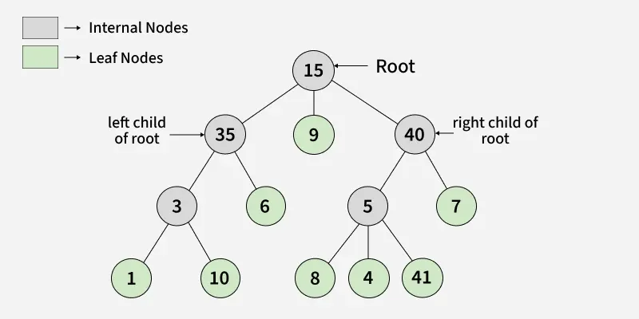
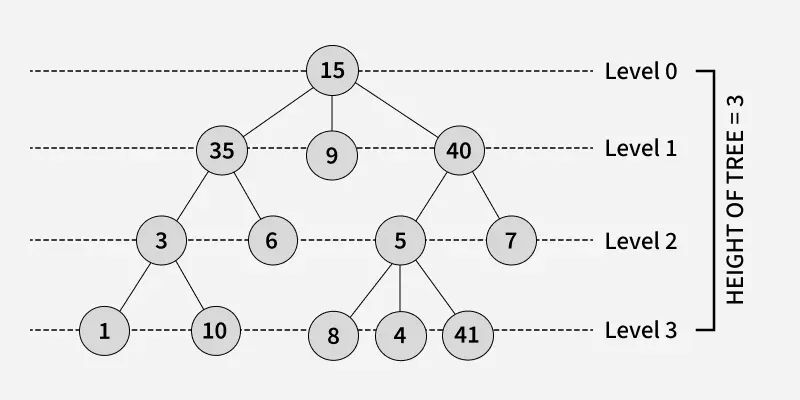
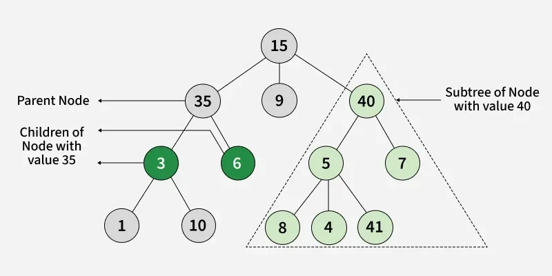
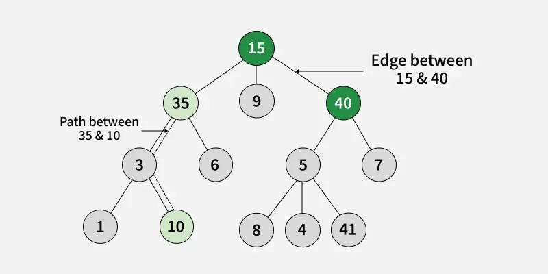
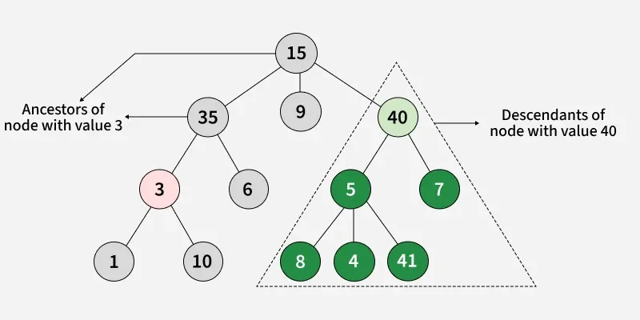
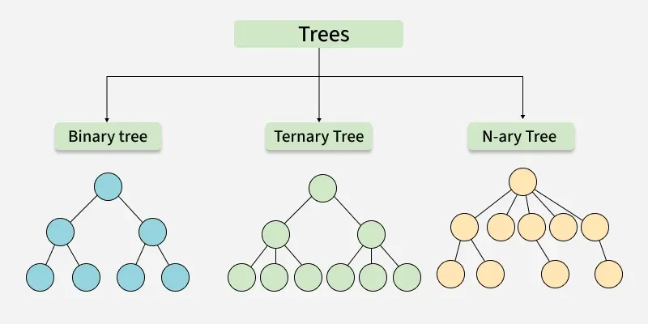
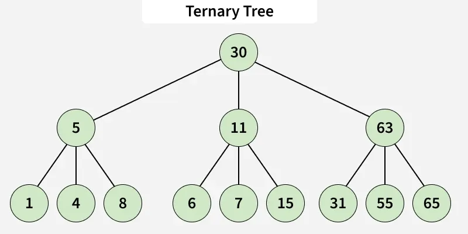
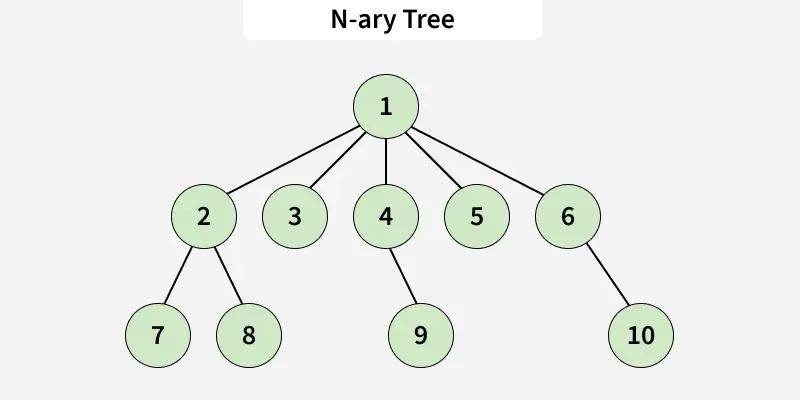

Tree
Tree adalah struktur data hierarkis yang digunakan untuk mengatur dan merepresentasikan data dalam hubungan parent-child . Tree terdiri dari simpul-simpul, di mana simpul teratas disebut root , dan setiap simpul lainnya dapat memiliki satu atau child nodes .
 |
 |
 |
 |
 |
Basic Terminologies In Tree Data Structure:
- Parent Node: A node that is an immediate predecessor of another node. Example: 35 is the parent of 3 and 6.
- Child Node: A node that is an immediate successor of another node. Example: 3 and 6 are children of 35.
- Root Node: The topmost node in a tree, which does not have a parent. Example: 15 is the root node.
- Leaf Node (External Node): Nodes that do not have any children. Example: 1, 10, 12, 5, 7, 7 are leaf nodes.
- Ancestor: Any node on the path from the root to a given node (excluding the node itself). Example: 15 and 35 are ancestors of 10.
- Descendant: A node x is a descendant of another node y if y is an ancestor of x. Example: 1, 10, and 6 are descendants of 35.
- Sibling: Nodes that share the same parent. Example: 1 and 10 are siblings, and 5 and 7 are siblings.
- Level of a Node: The number of edges in the path from the root to that node.The root node is at level 0.
- Internal Node: A node with at least one child.
- Neighbor of a Node: The parent or children of a node.
- Subtree: A node and all its descendants form a subtree.
Contoh Code
class Node:
->def __init__(self, x):
-->self.data = x
-->self.children = []
Importance of Tree Data Structure:
- Trees are useful for storing data that naturally forms a hierarchy.
- File systems on computers are structured as trees, with folders containing subfolders and files.
- The DOM (Document Object Model) of an HTML page is a tree:The tag is the root. and are its children.These tags can have their own child nodes, forming a hierarchical structure.
- Trees help in efficient data organization and retrieval for hierarchical relationships.
Types of Tree
A tree is a hierarchical data structure that consists of nodes connected by edges. It is used to represent relationships between elements, where each node holds data and is connected to other nodes with edges.

1. Binary Tree
A binary tree is a tree data structure where each node has at most two children. These two children are usually referred to as the left child and right child.
Example: Consider the tree below. Since each node of this tree has at most 2 children, it can be said that this tree is a Binary Tree.
.webp)
Types of Binary Tree:
- Binary Search Tree (BST) and its Variations: A BST is a binary tree where each node has at most two children, and for each node, the left child’s value is smaller than the node’s value, and the right child’s value is greater.
- Binary Search Tree (BST) and its Variations: A BST is a binary tree where each node has at most two children, and for each node, the left child’s value is smaller than the node’s value, and the right child’s value is greater.
- Balanced Binary Tree: A binary tree where the difference in heights between the left and right subtrees of any node is minimal (often defined as at most 1). Examples of Balanced Binary Tree are AVL Tree, Red Black Tree and Splay Tree.
2. Ternary Tree
A Ternary Tree is a tree data structure in which each node has at most three children. These three children are usually referred to as the left child, mid child and right child.
Example: Consider the tree below. Since each node of this tree has only 3 children, it can be said that this tree is a Ternary Tree.

Examples of Ternary Tree:
- Ternary Search Tree: A ternary search tree is a special trie data structure where the child nodes of a standard trie are ordered as a binary search tree.
- Ternary Heap: A type of heap where each node can have up to three children, though less common than binary heaps.
- B-tree: A self-balancing search tree where nodes can have multiple children, usually used for indexing large databases.
- B+ Tree: A B+ tree is a variation of the B-tree that only stores data in the leaf nodes, making range queries more efficient.
- Trie (Prefix Tree): A tree where each node represents a character, and paths from the root to leaves represent strings. It can have a variable number of children for each node, making it an N-ary tree.
- Create – create a tree in the data structure.
- Insert − Inserts data in a tree.
- Search − Searches specific data in a tree to check whether it is present or not.
- Traversal:
Depth-First-Search Traversal
Breadth-First-Search Traversal
3. N-ary Tree (Generic Tree)
An N-ary tree is a generalization of a binary tree, such that each node can have at most N children.
Example: Consider the tree below. Here, n=5, since each node of this tree has less than or equal to 5 children, it can be said that this tree is a n-ary tree for n = 5.

Examples of N-ary Trees:
Basic Operations Of Tree Data Structure:
Contoh Code
import sys
# Node structure for tree
class Node:
def __init__(self, x):
self.data = x
self.children = []
# Function to add a child to a node
def addChild(parent, child):
parent.children.append(child)
# Function to print parents of each node
def printParents(node, parent):
if parent is None:
print(str(node.data) + " -> NULL")
else:
print(str(node.data) + " -> " + str(parent.data))
for child in node.children:
printParents(child, node)
# Function to print children of each node
def printChildren(node):
children_str = " ".join(str(child.data) for child in node.children)
print(str(node.data) + " -> " + children_str)
for child in node.children:
printChildren(child)
# Function to print leaf nodes
def printLeafNodes(node):
if not node.children:
sys.stdout.write(str(node.data) + " ")
return
for child in node.children:
printLeafNodes(child)
# Function to print degrees of each node
def printDegrees(node, parent):
degree = len(node.children)
if parent is not None:
degree += 1
print(str(node.data) + " -> " + str(degree))
for child in node.children:
printDegrees(child, node)
# Main execution
if __name__ == "__main__":
# Creating nodes
root = Node(1)
n2 = Node(2)
n3 = Node(3)
n4 = Node(4)
n5 = Node(5)
# Constructing tree
addChild(root, n2)
addChild(root, n3)
addChild(n2, n4)
addChild(n2, n5)
print("Parents of each node:")
printParents(root, None)
print("Children of each node:")
printChildren(root)
print("Leaf nodes: ")
printLeafNodes(root)
print("\n") # Newline after leaf nodes
print("Degrees of nodes:")
printDegrees(root, None)